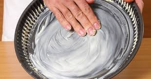
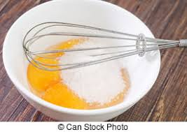
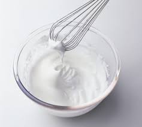
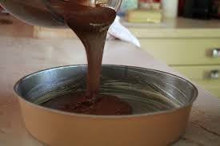
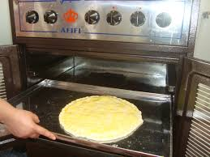
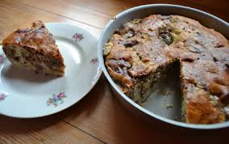

Le gateaux banane-chocolat
Les Ingredients
- 3 bananes
- 120 g de farine
- 150 g de sucre
- 100 g de beurre
- 3 oeufs
- 1 poignée de chocolat
Preparation
| Temps total |
1 heure |
| Preparation |
20 min |
| Cuisson |
40 min |
- Beurrez un grand moule rond. Pelez et coupez en dés les 3 bananes, laissez les dans un bol.
Faites fondre le beurre à feux doux

- Séparez les blancs des jaunes d'oeufs.
- Mettez les jaunes avec le sucre et battez-les au fouet électrique jusqu'à ce qu'ils blanchissent.
Ajouter le beurre fondu sans verser
le dépôt blanc au fond de la casserole, puis la farine.

- Fouettez les blancs en neige ferme avec une pincée de sel et incorporez les les petit a petit à la pâte.

- Versez-la dans le moule en alternant avec les dés de bananes et les pépites de chocolats
(quantité variable selon goût!).

- Enfournez et faites cuire 40 mn à thermostat 6 (180°C).

- Laissez reposer. Dégustez froid ou encore tiède.

Retour au Menus